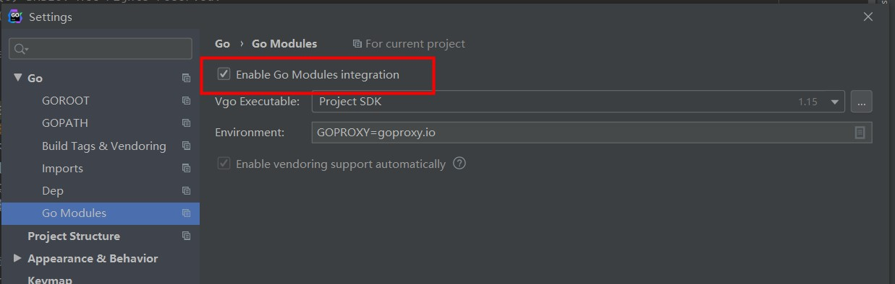
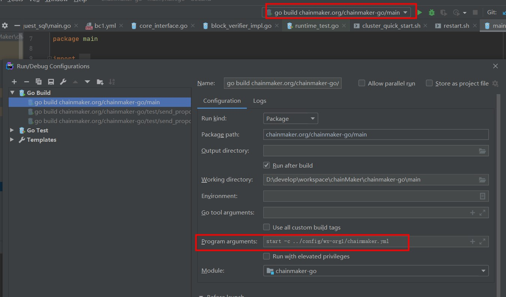
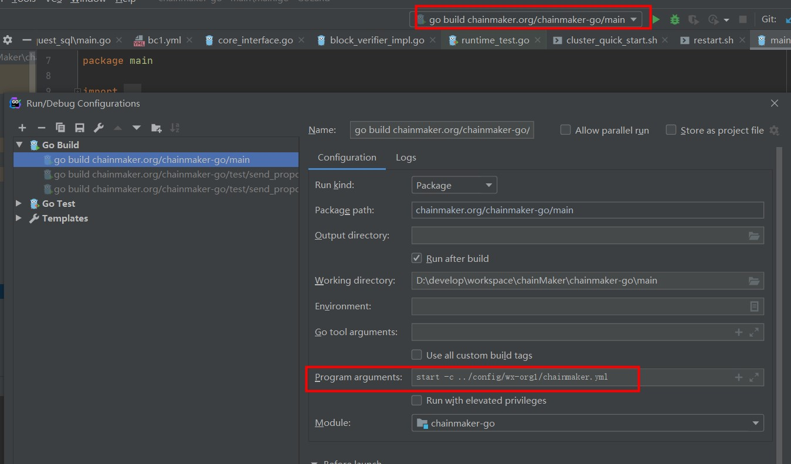
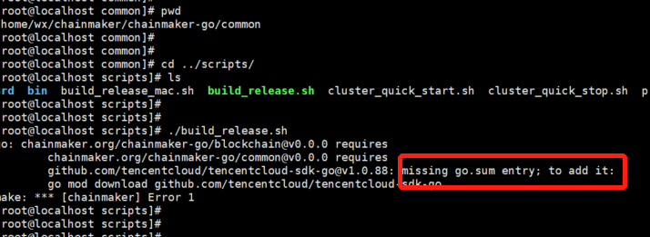
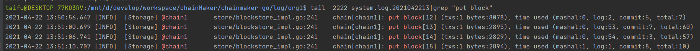
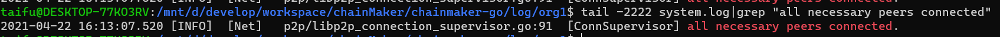
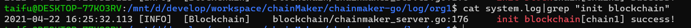

1. 概述¶
通过本文你将可以搭建起长安链多节点集群，并使用命令行工具和SDK完成长安链功能的体验。
2. 环境依赖¶
2.1. 硬件依赖¶
| 配置 | 最低配置 | 推荐配置 |
|---|---|---|
| CPU | 1.5GHz | 2.4GHz |
| 内存 | 4GB | 8GB |
| 核心 | 4核 | 8核 |
| 带宽 | 2Mb | 10Mb |
2.2. 软件依赖¶
2.2.1. git¶
下载地址：https://git-scm.com/downloads
安装步骤，请参看：https://git-scm.com/book/en/v2/Getting-Started-Installing-Git
3. 环境搭建¶
3.1. 使用脚本搭建¶
适用于
Linux、MacOS
3.1.1. 源码下载¶
从长安链官网下载源码：https://git.chainmaker.org.cn/chainmaker/chainmaker-go
当前为私有仓库，需要先进行账号注册
下载
chainmaker源码到本地
$ git clone --recursive https://git.chainmaker.org.cn/chainmaker/chainmaker-go.git
下载证书生成工具源码到本地
$ git clone --recursive https://git.chainmaker.org.cn/chainmaker/chainmaker-cryptogen.git
3.1.3. 证书及配置文件生成¶
将编译好的
chainmaker-cryptogen，软连接或拷贝到chainmaker-go/tools目录
# 进入工具目录
$ cd chainmaker-go/tools
# 软连接chainmaker-cryptogen到tools目录下
$ ln -s ../../chainmaker-cryptogen/ .
进入
chainmaker-go/scripts目录，执行prepare.sh脚本生成单链4节点集群配置，存于路径chainmaker-go/build中prepare.sh脚本支持生成solo模式节点证书和配置，以及4/7/10/13/16节点的证书和配置
# 进入脚本目录
$ cd ../scripts
# 查看脚本帮助
$ ./prepare.sh -h
Usage:
prepare.sh node_cnt(1/4/7/10/13/16) chain_cnt(1-4) p2p_port_prefix(default:11300) rpc_port_prefix(default:12300)
eg1: prepare.sh 4 1
eg2: prepare.sh 4 1 11300 12300
# 生成单链4节点集群的证书和配置
$ ./prepare.sh 4 1
begin check params...
begin generate certs, cnt: 4
input consensus type(default 1/tbft):
input log level(default INFO):
begin generate node1 config...
begin generate node2 config...
begin generate node3 config...
begin generate node4 config...
# 查看生成好的节点证书和配置
$ tree -L 3 ../build/
../build/
├── config
│ ├── node1
│ │ ├── certs
│ │ ├── chainconfig
│ │ ├── chainmaker.yml
│ │ └── log.yml
│ ├── node2
│ │ ├── certs
│ │ ├── chainconfig
│ │ ├── chainmaker.yml
│ │ └── log.yml
│ ├── node3
│ │ ├── certs
│ │ ├── chainconfig
│ │ ├── chainmaker.yml
│ │ └── log.yml
│ └── node4
│ ├── certs
│ ├── chainconfig
│ ├── chainmaker.yml
│ └── log.yml
├── crypto-config
│ ├── wx-org1.chainmaker.org
│ │ ├── ca
│ │ ├── node
│ │ └── user
│ ├── wx-org2.chainmaker.org
│ │ ├── ca
│ │ ├── node
│ │ └── user
│ ├── wx-org3.chainmaker.org
│ │ ├── ca
│ │ ├── node
│ │ └── user
│ └── wx-org4.chainmaker.org
│ ├── ca
│ ├── node
│ └── user
└── crypto_config.yml
关于自动生成的端口说明
通过prepare.sh脚本生成的配置，默认是在单台服务器上部署，故自动生成的端口号，是从一个起始端口号开始依次递增，可以通过命令行参数修改起始端口号。
主要有2个端口，p2p端口（用于节点互联）和rpc端口（用于客户端与节点通信），p2p起始端口为11301，rpc起始端口为12301。
如果生成4个节点的配置，p2p端口分别为：11301、11302、11303、11304，rpc端口分别为：12301、12302、12303、12304
如果是在多机部署，希望生成固定的端口号，请参考：【多机部署】
3.1.4. 编译及安装包制作¶
执行
build_release.sh脚本，将编译chainmaker-go模块，并打包生成安装，存于路径chainmaker-go/build/release中
$ ./build_release.sh
$ tree ../build/release/
../build/release/
├── chainmaker-V1.0.0-wx-org1.chainmaker.org-20210406194833-x86_64.tar.gz
├── chainmaker-V1.0.0-wx-org2.chainmaker.org-20210406194833-x86_64.tar.gz
├── chainmaker-V1.0.0-wx-org3.chainmaker.org-20210406194833-x86_64.tar.gz
├── chainmaker-V1.0.0-wx-org4.chainmaker.org-20210406194833-x86_64.tar.gz
└── crypto-config-20210406194833.tar.gz
3.1.5. 启动节点集群¶
执行
cluster_quick_start.sh脚本，会解压各个安装包，调用bin目录中的start.sh脚本，启动chainmaker节点
$ ./cluster_quick_start.sh normal
若需要关闭集群，使用脚本：
$ ./cluster_quick_stop.sh
3.1.6. 查看节点启动使用正常¶
查看进程是否存在
$ ps -ef|grep chainmaker | grep -v grep
jason 25261 2146 4 19:55 pts/20 00:00:01 ./chainmaker start -c ../config/wx-org1.chainmaker.org/chainmaker.yml
jason 25286 2146 4 19:55 pts/20 00:00:01 ./chainmaker start -c ../config/wx-org2.chainmaker.org/chainmaker.yml
jason 25309 2146 4 19:55 pts/20 00:00:01 ./chainmaker start -c ../config/wx-org3.chainmaker.org/chainmaker.yml
jason 25335 2146 4 19:55 pts/20 00:00:01 ./chainmaker start -c ../config/wx-org4.chainmaker.org/chainmaker.yml
查看端口是否监听
$ netstat -lptn | grep 1230
tcp6 0 0 :::12301 :::* LISTEN 25261/./chainmaker
tcp6 0 0 :::12302 :::* LISTEN 25286/./chainmaker
tcp6 0 0 :::12303 :::* LISTEN 25309/./chainmaker
tcp6 0 0 :::12304 :::* LISTEN 25335/./chainmaker
检查节点是否有
ERROR日志
$ cat ../build/release/chainmaker-V1.0.0-wx-org1.chainmaker.org/bin/panic.log
$ tail -f ../build/release/chainmaker-V1.0.0-wx-org1.chainmaker.org/log/system.log
$ tail -f ../build/release/chainmaker-V1.0.0-wx-org1.chainmaker.org/log/system.log|grep "ERROR\|put block\|all necessary"
3.2. 使用Docker搭建¶
适用于
Docker
3.2.1. 编译docker镜像¶
$ cd chainmaker-go
# 生成镜像名称为：chainmaker:v1.0.0_r，如需要修改版本，请修改Makefile文件
$ make docker-build
3.2.2. 启停solo节点¶
为了方便使用，使用的配置文件及证书已放置于目录：
chainmaker-go/scripts/docker/config/solo如镜像名称有调整，请修改
solo.docker-compose.yml文件
$ cd chainmaker-go/scripts/docker/
# 启动solo节点
$ ./solo_up.sh
# 关闭solo节点
$ ./solo_down.sh
3.2.3. 启停4节点集群¶
为了方便使用，使用的配置文件及证书已放置于目录：
chainmaker-go/scripts/docker/config/four-nodes如镜像名称有调整，请修改
four-nodes.docker-compose.yml文件
$ cd chainmaker-go/scripts/docker/
# 启动4节点集群
$ ./four-nodes_up.sh
# 关闭4节点集群
$ ./four-nodes_down.sh
4. 功能验证¶
为了验证所搭建的链功能是否正常，可以通过cmc命令行工具或sdk的单元测试用例来进行验证。
4.2. go sdk验证¶
4.2.1. 下载go sdk源码¶
$ git clone --recursive https://git.chainmaker.org.cn/chainmaker/chainmaker-sdk-go.git
4.2.2. 关联证书¶
将通过
prepare.sh工具生成的crypto-config目录，软连接到chainmaker-sdk-go/testdata目录
$ cd chainmaker-sdk-go/testdata
# 这里我们使用新生成的用户证书，请先将testdata已有的crypto-config移除
$ /bin/rm -rf crypto-config
$ ln -s ../../chainmaker-go/build/crypto-config/ .
4.2.3. 配置修改¶
修改sdk单元测试使用的配置文件：
chainmaker-sdk-go/testdata/sdk_config.yml
根据需要修改节点地址：
nodes:
- # 节点地址，格式为：IP:端口:连接数
node_addr: "127.0.0.1:12301"
如果证书路径有调整，修改对应的证书路径配置：
# 客户端用户私钥路径
user_key_file_path: "./testdata/crypto-config/wx-org1.chainmaker.org/user/client1/client1.tls.key
# 客户端用户证书路径
user_crt_file_path: "./testdata/crypto-config/wx-org1.chainmaker.org/user/client1/client1.tls.crt"
# 客户端用户交易签名私钥路径(若未设置，将使用user_key_file_path)
user_sign_key_file_path: "./testdata/crypto-config/wx-org1.chainmaker.org/user/client1/client1.sign.key"
# 客户端用户交易签名证书路径(若未设置，将使用user_crt_file_path)
user_sign_crt_file_path: "./testdata/crypto-config/wx-org1.chainmaker.org/user/client1/client1.sign.crt"
4.2.4. 执行存证合约单测¶
该单测会进行存证合约的部署、调用和查询。
$ cd chainmaker-sdk-go
$ go test -v -run UserContractClaim
看到类似输出，说明功能验证成功：
2021-04-07 21:45:25.510 [DEBUG] [SDK] chainmaker-sdk-go/sdk_client.go:343 [SDK] proposalRequest resp: message:"SUCCESS" contract_result:<result:"{\"file_hash\":\"9387687162f344b79b39385c5e998f97\",\"file_name\":\"file_1617803123443\",\"time\":\"1617803123443\"}" gas_used:25145486 >
4.2.5. 执行资产合约单测¶
也可以跑资产合约的单测，该单测会创建A、B两个账号，每个账号初始资产为100000，A给B转账100，最后查看A和B的余额，分别为99900和100100。
$ go test -v -run UserContractAsset
看到类似输出，说明资产合约功能验证成功：
2021-04-07 21:46:30.439 [DEBUG] [SDK] chainmaker-sdk-go/sdk_client.go:343 [SDK] proposalRequest resp: message:"SUCCESS" contract_result:<result:"99900" gas_used:16058023 >
2021-04-07 21:46:30.448 [DEBUG] [SDK] chainmaker-sdk-go/sdk_client.go:343 [SDK] proposalRequest resp: message:"SUCCESS" contract_result:<result:"100100" gas_used:16120471 >
5. 开发-goland启动链¶
5.1. 下载安装goland¶
略
5.3. 下载源码¶
git clone --recurse-submodules git@git.code.tencent.com:ChainMaker/chainmaker-go.git
5.4. 启动goland¶
5.4.1. 导入chainmaker-go¶
略
5.4.2. 配置goland¶
Ctrl+Alt+S 或者 File->Settings…
Go–>Go Modules –> 勾上Enable Go Modules integration
Go–>GOROOT–>添加已安装的go
5.4.3. 启动项目（SOLO模式）¶
修改配置文件
chainmaker-go/config/wx-org1/chainconfig/bc1.yml将 consensus.type修改为0：启用solo共识
chainmaker-go/config/wx-org1/log.yml将 log_in_console修改为true：在控制台输出日志
启动
找到文件 chainmaker-go/main/main.go 直接运行，然后点击停止，修改启动参数为start -c ../config/wx-org1/chainmaker.yml再次点击运行即可；见下图：
 
5.4.4. 测试¶
找到文件chainmaker-go/test/send_proposal_request_solo/main.go直接运行main即可
若遇到文件未找到等错误，请将goland 的配置： working directory修改为当前目录，或者手动修改文件目录
6. 常见问题¶
6.1. 视频教程¶
时间脚本:
• 01-04分钟：长安链简介及大纲介绍；
• 04-09分钟：环境安装演示；
• 09-26分钟：单机部署；
• 26-36分钟：智能合约开发（穿插常见问题）；
• 36-54分钟：部署合约（穿插常见问题）；
• 54—结束：常见问题及单机&多级部署对照表。
6.2. 编译时错误¶
6.2.1. missing go.sum entry¶
Q：
如果执行 ./build_release.sh 时 或者在启动时 报错：misssing go.sum entry: to add it，分别在 chainmaker-go/main 或者 chainmaker-go/common 和 chainmaker-go/tools/cmc 下执行 go mod download ，执行完后 再重试
问题描述如下图：
A：
进入对应目录执行go mod download
cd chainmaker-go/main
go mod download
cd chainmaker-go/common
go mod download
cd chainmaker-go/tools/cmc
go mod download
6.2.2. go.mod no such file or directory¶
Q:
编译时报错：
go: chainmaker.org/chainmaker-go/blockchain@v0.0.0 requires chainmaker.org/chainmaker-go/common@v0.0.0: parsing ../common/go.mod: open /mnt/d/develop/workspace/go/noSubmodule/chainmaker-go/common/go.mod: no such file or directory
A:
一、可能是因为clone是未使用submodule模式，需初始化submodule，如下命令
git submodule init
git submodule update
正确的clone方式：
git clone --recursive https://git.chainmaker.org.cn/chainmaker/chainmaker-go.git
6.3. 启动时错误¶
6.3.1. not found GLIBC_2.18¶
Q:
若出现错误./chainmaker: /lib64/libc.so.6: version GLIBC_2.18’ not found (required by /root/git-code/chainmaker-go/module/vm/wasmer/wasmer-go/libwasmer.so)`
A:
在linux下可进入chainmaker-go/scripts/3rd目录安装glibc-2.18.tar.gz依赖
# 注：此操作为安装替换GCC版本，请慎重操作。一旦出错系统将不可用。
cd scripts/3rd
sh install.sh
6.3.2. restart.sh 权限不足¶
Q:
[root@localhost scripts]# ./cluster_quick_start.sh normal ===> Staring chainmaker cluster START ==> /home/wx/chainmaker/chainmaker-go/build/release/chainmaker-V1.0.0-wx-org1.chainmaker.org ./cluster_quick_start.sh: line 51: ./restart.sh: Permission denied
A:
如果启动时 出现restart.sh 权限不足问题，给restart.sh 增加执行权限
给项目源文件添加执行权限
cd chainmaker-go/script/bin
chmod +x *.sh
给部署文件添加执行权限
# 进入四个节点的bin目录下 执行下面命令(以第一个节点 org1 为例)
cd chainmaker-go/build/release/chainmaker-V1.0.0-wx-org1.chainmaker.org/bin
chmod +x *.sh
6.4. 运行时错误¶
6.4.1. syscall/js.valueGet not exported¶
Q:
执行gasm合约时报错：resolve imports: syscall/js.valueGet not exported in module env
A:
tinygo不支持fmt等函数
6.4.2. runtime type error¶
Q:
发送交易成功，但链打印错误信息：contract invoke failed, runtime type error, expect rust:[2], but got 4。同时根据该交易id查询到交易错误信息。
A:
执行交易时异步的（查询类交易除外），返回的状态为链成功接收到交易的状态。执行合约是，runtimeType选择错误，需要根据自己的合约语言选择对应的runtimeType
| 语言 | 类型 |
|---|---|
| 系统合约 | RuntimeType_NATIVE = 1 |
| rust | RuntimeType_WASMER = 2 |
| c++ | RuntimeType_WXVM = 3 |
| tinygo | RuntimeType_GASM = 4 |
| solidity | RuntimeType_EVM = 5 |
6.4.3. 返回成功，但实际执行失败¶
Q:
使用sdk执行安装、调用合约时，SDK 返回message为ok，但链和交易显示执行失败
A:
交易的执行是异步的。SDK返回的成功信息指的是链成功接收到该交易。
获取查看交易实际结果的方式：
根据txId查询该交易，解析出结果。
使用SDK是选择同步发送交易，等待执行结果。
6.5. 其他关键信息¶
6.5.1. 出块标记是什么¶
进入log目录，查看日志文件 筛选
put block即可
cat system.log|grep "ERROR\|put block"其中一行解释如下：
2021-04-22 13:50:56.647 [INFO] [Storage] @chain1 store/blockstore_impl.go:241 chain[chain1]: put block[12] (txs:1 bytes:8078), time used (mashal:0, log:2, commit:5, total:7)
时间 [日志级别] [模块] @链名称 文件名.go:行数 链chain[链名称]:put block[区块高度](txs:交易个数 bytes:区块大小), 使用时间毫秒(mashal:0, log:2, commit:5, total:7)
6.5.2. 组网成功标记是什么¶
组网成功后，即可发送交易。此时接收到的交易将进入到交易池当中，并且会广播给网络的每一个节点（共识、见证节点、轻节点），随后等待共识成功选举leader开始打包区块。
SOLO共识
start blockchain[chain1] success
其他共识
进入log目录，查看日志文件 筛选
all necessary peers connected和start blockchain[chain1] success可看到如下日志
cat system.log|grep "init blockchain\|all necessary peers connected"2021-04-22 16:13:07.520 [INFO] [Net] p2p/libp2p_connection_supervisor.go:91 [ConnSupervisor] all necessary peers connected.